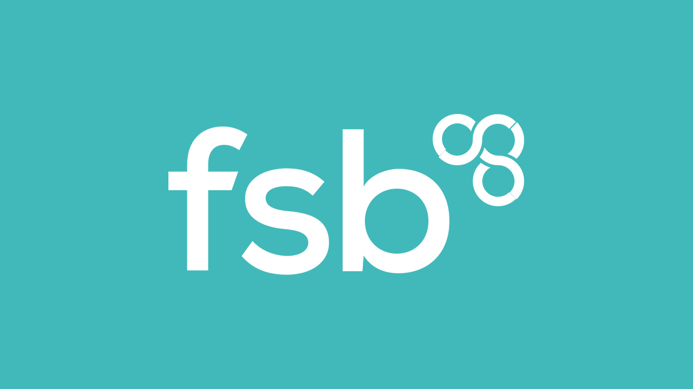

Newcastle Networking by FSB and HSBC - July 2024
FSB
FSB are a not-for-profit organisation where can access benefits and have an influential conversation with the government and are celebrating 50 years this year. They have their own insurance brokerage and offer insurance at massively discounted rates and can just call them up and see what you legally need and if are over or under insured and they can just advice and not sell anything, but you can find out what you need. FSB also work with Staff Skills Training with hours of content for £80 per head with access to over 700 courses for a year and can do as many as you like including self-development, computing, dog grooming or others and most have qualifications and available to members of the FSB. There is also a group for Network Not Work who currently operate in Tees Valley and there will be networking festival after the summer.
UK Fraud & Cybercrime Awareness - HSBC
HSBC stated that no one knows how bad it is as a lot of cyber fraud is not reported, the most popular password is 123456 which shows people aren't taking the steps to protect themselves.
The Hot State is a way of getting you to hand over something you shouldn't have with pressure and fraudsters can also get some of your personal information, so the main thing is not to give anything personal to anyone.
Remote Access Takeover is where fraudsters can spoof genuine phone numbers and even mirror procedures and will know your personal information and will pretend to be from fraud teams and even mention that staff member from bank is committing fraud and need your help to aid law enforcement. The fraudster also may have some of your online banking details and may ask to visit a website and download chat software they will ask for secure codes and other things.
Business Email Compromise is where fraudsters contacting businesses to defraud them such as payment diversion and get pressured to pay to new details from a supplier, they will get details from social media. Check email address they could have similar ones or compromise an existing one, check why new details are being provided and if are being pressured into paying right away, are you going to be told they aren't going to be contactable for a while is a sign of potential fraud. BEC is where an email account is compromised or spoofed. If getting any changes in account details, you can contact them by phone to make sure it is genuine and could also do a test by sending a small amount to see if it goes through.
Tips to protect your business is to remember phone numbers can be spoofed and people will try to get information from you, HSBC would never ask for certain details or to help with an investigation and make sure are speaking to someone you know when it comes to any funds transfers or changes, also make sure that everyone knows about the risks and can use 2FA/MFA to make sure only you can log in. You should have a response and recovery plan for fraud or cyber security issues and can also use a VPN to help protect any details when out in other places.
Generative AI & Fraud Awareness Guide, you can fake anyone to scam a person or business and generative AI can help scammers impersonate someone or a business and can use it to enhance email phishing including tone of emails, voice spoofing uses generative AI to duplicate a voice and deepfakes can be used to duplicate the appearance of people. You need to check of validate information, deep fakes tend not to blink and not look correct compared to a real person.
Skillogy Perform - Sue Wild
Skillogy provide human-centric skills training and Sue started by saying there are two lions outside of HSBC and are named Steven and Gordon and demonstrate the strength of HSBC. Hong Kong forms a strong part of Skillogy and had projects over there including Hong Kong Yacht Club. They did big contracts with face-to-face delivery helping people and teams and today their content is online and accessed in over 45 countries and over 700 organisations.
There are 5.6 million small businesses with over 99.2% of the total business population and these are being managed by one person and becoming a small business means you have accidentally become a manager but usually won't have any of those skills of a manager. How many soft skills can you name? Active Listening, Empathy etc but they are groups as self, management and leader but the most common one is emotional intelligence as before you can manage others you need to know yourself. This is about understanding your own emotions and the emotions of those around you and self-management is important to recognise positive impacts along with avoiding the negative and doesn't take much to learn this but to learn this there are action plans on how to develop yourself.
What are the management issues that a small businessperson has to face such as financial management, marketing and sales, technology, customer service, time management and more. Can organise these into various categories and find solutions and organise these into technical hard skills and human centric soft skills. HR tends to be in both camps but can get support from FSB for some of those skills.
Skillogy helps with training and development, talent management and more for HR, there's also operational management so if have people you need to keep people informed and involved. Interested and inspired. They provide the resources to make teamwork happen and help keep motivating people. They have courses on teamwork, theories and practices of motivation which reflects the skills of the leader.
Skillogy originally was delivered on CD-ROM and face-to-face and they needed to embrace change management as nothing remains static and often 50% will resist change and the other 50% will embrace change. HSBC moving from Grey Street to Orchard Street was a big change for them.
Customer service skills are crucial to a business including empathy, adaptability, positive language, clear communication skills, self-control, taking responsibility, patience and others. Emotional intelligence provides tool for effective communication and interaction with others and for managing customer service have personal communication and organisation skills along with decision management or judgement plus organisational management and others.
Time Management has linked to it is priority management, delegation, objective setting and personal organisation. Risk Management is really important and requires good decision judgement and management to identify risks and develop approaches for unexpected challenges.